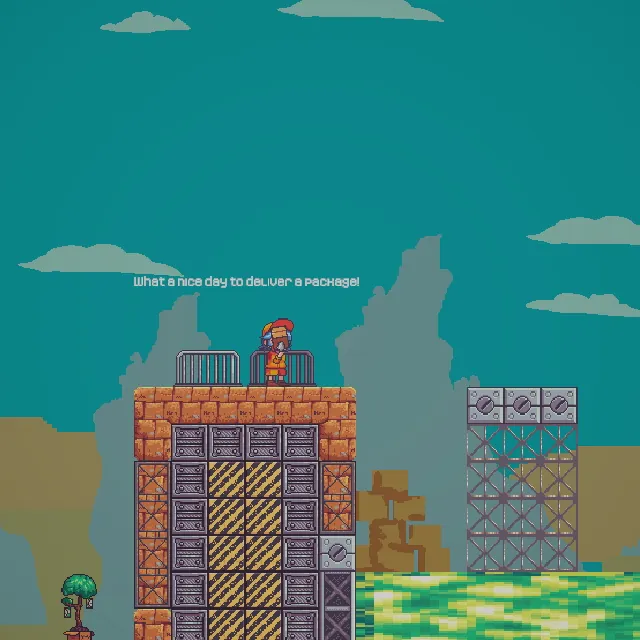

72時間で作った移動アクション
マウスか右スティックで狙ってパンチ。グローブが伸び、一瞬遅れて反動で逆方向へ飛ばされます。空中でもう一度パンチするとグローブが戻り、より強い二度目の反動が生まれ、二段ジャンプのように使えます。グローブは着地で回復し、足場から歩いて落ちた直後のパンチも有効になる短いコヨーテタイム付きです。
ステージには空中で張り付いてゆっくり滑り落ちる壁、動く足場、ベルトコンベアがあり、ジャム中にデザイナーと一緒に調整しました。回転トリガーで重力が90度回転し、画面も一緒に回るので、ステージの一部は横向きや逆さまでプレイします。音楽もFMODのパラメーターで向きごとに変わります。
if (protracted && activateGloves.WasPressedThisFrame())
{
// Second punch in the air: retract and kick off harder.
retractCoroutine?.StopCoroutine();
Retract();
rb.AddForce(-direction * doubleJumpForce, ForceMode2D.Impulse);
}
if (canActivate && activateGloves.WasPressedThisFrame())
{
protracted = true;
canActivate = false; // recharged on (coyote) ground
retractCoroutine = Cooldown(extendedDuration, Retract);
Cooldown(knockbackDelay, () =>
rb.AddForce(-direction * knockbackForce, ForceMode2D.Impulse));
}ジャムでのその他の担当
移動以外に、会話画面、ポーズメニュー、FMODのサウンド連携を作りました。状態とイベントはRippleで動いているので、デザイナーはコードなしでトリガーを設定できました。

Canozalez、Chaos-1001（アート）、Pierre-Henri Barralis（音楽・サウンド）ほかジャムチームと制作。